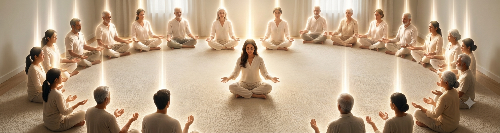

Mass Pranic Healing
Deep Healing for the Body, Mind, Emotions, Relationships & Abundance
Sometimes we don't need to push harder — we need a moment to pause, release and restore. Life can leave us carrying more than we realize: physical fatigue, emotional heaviness, mental stress, relationship challenges, financial worries, and patterns that quietly drain our energy. A Mass Pranic Healing session offers a dedicated space to step away from the demands of everyday life and receive energetic support across the different dimensions of your life, working with the body's energy field through cleansing, energizing and balancing. You don't need to arrive with everything figured out — simply come as you are, and create space for healing, renewal and a fresh sense of possibility.

What the Mass Pranic Healing Offers
Physical HealingSupport the body's energetic balance and create space for relaxation, renewal and vitality.
Emotional HealingRelease accumulated emotional heaviness and support greater emotional balance, calm and lightness.
Mental HealingCreate space from persistent mental stress and overwhelm, supporting greater clarity and inner steadiness.
Relationship HealingWork with energetic patterns surrounding relationships, helping create greater openness, harmony, compassion and understanding.
Financial Abundance HealingExplore energetic patterns connected with scarcity, fear, limitation and resistance around money and prosperity.
Deep Energetic CleansingPranic Healing traditionally works with energetic cleansing to remove congested or depleted energy and restore greater balance.
Renewed Energy & VitalitySupport a sense of being refreshed, recharged and more capable of engaging with everyday life.
Greater Inner BalanceCreate a stronger sense of equilibrium across different areas of life rather than focusing on one concern in isolation.
Space to Let GoSometimes healing begins simply by giving yourself permission to stop carrying everything for a while.
How the Session Flows
Arrival & Settling
Take a moment to leave behind the pace of everyday life and arrive fully in the space.
Setting Your Intention
You are invited to bring awareness to the areas of life where you would most like to experience healing, renewal or greater balance.
Preparing for the Healing
A brief guided preparation helps you become relaxed, receptive and present for the healing experience.
Mass Pranic Healing
Receive a guided group healing experience incorporating Pranic Healing principles of cleansing, energizing and balancing — encompassing physical, emotional, mental, relationship and financial-abundance dimensions of wellbeing.
Deep Rest & Integration
A period of quiet allows you to rest, absorb the experience and gently reconnect with yourself.
Grounding & Closing
The session concludes with grounding and simple guidance for carrying the sense of balance and renewal into your everyday life.
Community Connection
An opportunity to reconnect with others, share the space and leave feeling supported as part of a community.
Common Questions
It is a group healing experience based on Pranic Healing principles, where multiple participants receive energetic healing together in a guided setting.
No. The session is open to beginners as well as people who are already familiar with Pranic Healing.
Not at all. You may come with a particular area you'd like to work on, or simply with a desire to feel more balanced, renewed and energized.
Yes. The session is designed as a deep, holistic healing experience, encompassing physical, emotional, mental, relationship and financial-abundance dimensions.
No. The session does not guarantee financial outcomes. The financial-abundance component focuses on energetic patterns and personal awareness and should complement practical financial and life decisions.
No. Pranic Healing should not be considered a substitute for qualified medical, psychological or other professional care. If you have a health concern, continue to seek appropriate professional support.
Come in comfortable clothing and allow yourself enough time to arrive without rushing. No special experience or preparation is required.
Yes. The session is designed to be accessible even if you have never experienced Pranic Healing before.
Everyone's experience is different. Some people may experience deep relaxation, warmth, lightness, calm or other sensations, while others may simply experience a quiet sense of rest. There is no particular experience you need to have.
Give yourself a little space to rest and integrate. Stay hydrated, move gently, and allow yourself to notice any changes in how you feel over the following hours or days.
Come As You Are
You don't have to solve everything today. Give yourself permission to pause — to release what feels heavy, to restore what feels depleted, and to create space for greater balance, clarity and possibility. A moment of healing can become a moment of beginning again.
Get in touch